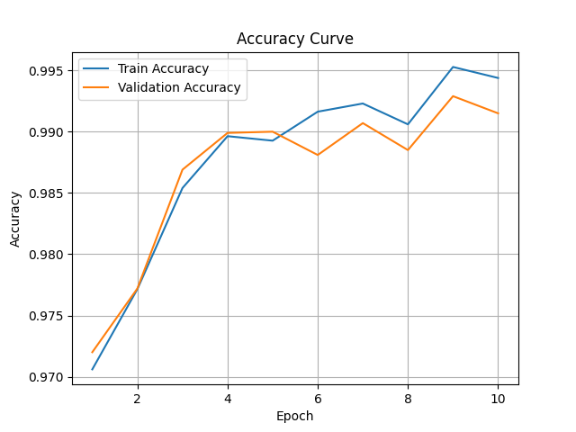

← Back to homepage
No-Propagation Diffusion Transformers (NoPropDT)
A clean PyTorch implementation of a backpropagation-free training algorithm: achieving 99% accuracy on MNIST using only local layer-wise denoising targets.
PyTorch
Diffusion
Backprop-Free Learning
MNIST
CIFAR-10
Python 100%
5 ⭐ on GitHub

✅ Result: ~99% validation accuracy on MNIST by epoch 7 and ~76% on CIFAR-10 by epoch 50 —
achieved without a single gradient flowing backward through the network.
The Big Idea
Every modern neural network is trained with backpropagation: computing gradients of a global loss
and pushing them backward through every layer. Backprop is powerful, but it is:
- Biologically implausible: real neurons don't receive error signals from the future
- Memory-intensive: requires storing all intermediate activations for the backward pass
- Hard to parallelize layer-wise: each layer waits for the layer above to finish its backward pass
NoPropDT (from researchers at the University of Oxford) replaces backprop with a stack of
local denoising blocks. Each block learns to denoise a class embedding toward the correct label —
no global gradient, no backward pass through the whole network.
How NoPropDT Works
The intuition maps directly to diffusion models: start with a noisy guess and iteratively denoise it.
- Start with a noisy class embedding (Gaussian noise added to the label embedding)
- A DenoiseBlock (CNN + MLP) processes the image alongside the noisy embedding and predicts a cleaner version
- This is repeated T times: each block is trained with a local MSE loss only (no chain rule across blocks)
- A final linear classifier reads the fully denoised embedding and predicts the class
Code flow:
main.py
└─→ experiments/run_mnist_dt.py
├─→ data/mnist_loader.py # MNIST DataLoaders
├─→ models/no_prop_dt.py # NoPropDT model + DenoiseBlock
└─→ trainer/train_nopropdt.py # Layer-wise local MSE training
Results
| Dataset |
Variant |
Accuracy |
Epochs to convergence |
| MNIST |
With nonlinear decoder |
~99% |
7 |
| MNIST |
No decoder |
~97% |
10 |
| CIFAR-10 |
With nonlinear decoder |
~76% |
50 |
| CIFAR-10 |
No decoder |
~68% |
50 |
All results achieved without backpropagation. Training uses only local per-layer MSE losses.
Why I Built This
This was a deep-dive reproduction exercise: reading a research paper (Oxford, 2025) and rebuilding it
from scratch in a clean, modular PyTorch codebase, extending it to CIFAR-10 and adding a nonlinear decoder
variant. The goal was to deeply understand an alternative training paradigm that could matter for
neuromorphic hardware, federated learning, and biologically plausible AI.
The repo has earned 5 ⭐ and is actively watched by researchers interested in backprop-free learning.